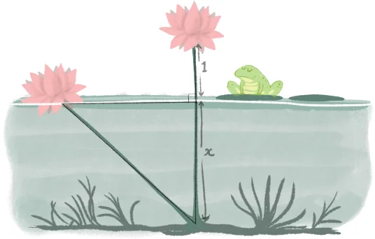

The Baudhāyana-Pythagoras theorem is one of the fundamental theorems of geometry. Let us see some of its applications.
A Problem from Bhāskarāchārya’s Līlāvatī
The following is a translation of a problem from Bhāskarāchārya’s (Bhāskara II) Līlāvatī. Try to visualise what you read. "In a lake surrounded by chakra and krauñcha birds, there is a lotus flower peeping out of the water, with the tip of its stem 1 unit above the water. On being swayed by a gentle breeze, the tip touches the water 3 units away from its original position. Quickly tell the depth of the lake." At first glance, it seems like there is insufficient data to find the solution. But the solution exists! Let x be the length of the stem inside the water. This is the required depth of the lake. Since the stem of the lotus is sticking 1 unit above the water, the total length of the stem is \(x + 1\). We can make a (very reasonable) assumption that the lotus stem is perpendicular to the surface of the water in the first position. With this assumption, we get a right triangle of sides 3, x and \(x + 1\). As this satisfies the Baudhāyana-Pythagoras theorem, we have

$$3^2 + x^2 = (x + 1)^2$$
$$9 + x^2 = x^2 + 2x + 1.$$
Subtracting \(x^2\) from both sides, we get
$$9 = 2x + 1.$$
$$x = 4.$$
Thus, the depth of the lake is 4 units.